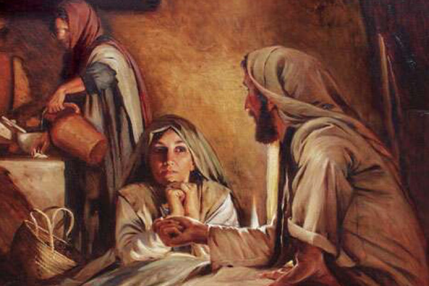

Leitura Orante
Leituras do Dia
Sexta-feira - 24ª semana do
Tempo Comum
(Verde -Ofício do dia)
18 de setembro de 2020
Leitura Orante do Evangelho
Ouça o áudio da oração e reflexão do padre Francisco das Chagas


Oração do dia
Ó Deus, criador de todas as coisas, volvei para nós o vosso olhar e, para sentirmos em nós a ação do vosso
amor, fazei que vos sirvamos de todo o coração. Por Nosso Senhor Jesus Cristo, Vosso Filho, na unidade do
Espírito Santo.
Leitura: 1 Coríntios 15,12-20
Irmãos, 12se se prega que Cristo ressuscitou dos mortos, como podem alguns dizer entre vós que não há ressurreição dos mortos? 13Se não há ressurreição dos mortos, então Cristo não ressuscitou. 14E se Cristo não ressuscitou, a nossa pregação é vã e a vossa fé é vã também. 15Nesse caso, nós seríamos testemunhas mentirosas de Deus, porque teríamos atestado, contra Deus, que ele ressuscitou Cristo quando, de fato, ele não o teria ressuscitado – se é verdade que os mortos não ressuscitam. 16Pois, se os mortos não ressuscitam, então Cristo também não ressuscitou. 17E se Cristo não ressuscitou, a vossa fé não tem nenhum valor e ainda estais nos vossos pecados. 18Então, também os que morreram em Cristo pereceram. 19Se é para esta vida que pusemos a nossa esperança em Cristo, nós somos – de todos os homens – os mais dignos de compaixão. 20Mas, na realidade, Cristo ressuscitou dos mortos como primícias dos que morreram – Palavra do Senhor.
Salmo Responsorial: 16(17)
Ao despertar, me saciará vossa presença, ó Senhor.
Ó Senhor, ouvi a minha justa causa, escutai-me e atendei o meu clamor! Inclinai o vosso ouvido à minha prece, pois não existe falsidade nos meus lábios!
Ao despertar, me saciará vossa presença, ó Senhor.
Eu vos chamo, ó meu Deus, porque me ouvis, inclinai o vosso ouvido e escutai-me! Mostrai-me vosso amor maravilhoso, vós que salvais e libertais do inimigo quem procura a proteção junto de vós.
Ao despertar, me saciará vossa presença, ó Senhor.
FeProtegei-me qual dos olhos a pupila e guardai-me à proteção de vossas asas. E verei, justificado, a vossa face, e, ao despertar, me saciará vossa presença.
Ao despertar, me saciará vossa presença, ó Senhor.
Evangelho: Lucas 8,1-3
Naquele tempo, 1Jesus andava por cidades e povoados, pregando e anunciando a Boa-nova do Reino de Deus. Os doze iam com ele; 2e também algumas mulheres que haviam sido curadas de maus espíritos e doenças: Maria, chamada Madalena, da qual tinham saído sete demônios; 3Joana, mulher de Cuza, alto funcionário de Herodes; Susana e várias outras mulheres que ajudavam a Jesus e aos discípulos com os bens que possuíam. – Palavra da Salvação.
Leituras do mês
TAGS
missao Amazonia evengel covid-19 indigenas novica papa francisco
Destaques
Província Stella Matutina
Rua São Benedito, 2146 - Santo Amaro - São Paulo - SP |
Tel. (11)
5547-7222


Província Spiritus Divinae Sapientiae
Rua Arnaldo Janssen, 320 - Cara-Cara - Ponta Grossa - PR |
Tel. (42) 3326 4091